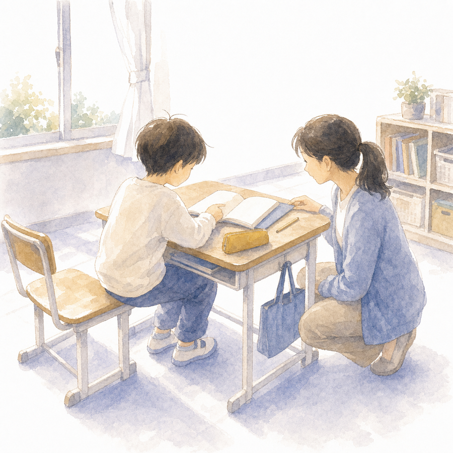

学年の教科書にまったく乗れない子を前にすると、「どこまで下りればいいのか」が見えなくなります。 その下りる階段の地図を、国がもう作っています。特別支援学校で使われている文部科学省著作の教科書、通称「星本（ほしぼん）」。 1冊660円から誰でも買えるこの教科書を、通常学級の先生の道具にするためのガイドと教材、全14枚です。

このページは文部科学省の公式ガイドではありません。現役の小学校教員が、教科書目録・活用実践事例集などの公開資料をもとに作った紹介・活用教材です（出典は下部）。星本の紙面は掲載していません。
星本の階段に沿って作った自作プリントの見本です（星本の紙面の複製ではありません）。 その子だけに配らず、学級全体の「選べるプリント」の一つに混ぜるのがおすすめです。紙面には段階を書いていません。対応は下の表で。
| プリント | 対応する段階（先生用） |
|---|---|
| P01・P02 | さんすう☆相当（数量の基礎：対応・くらべる） |
| P03・P04 | さんすう☆☆相当（10までの数） |
| P05 | こくご☆〜☆☆相当（ことばと絵） |
| P06 | こくご☆☆☆相当（出来事の順序） |
・文部科学省「特別支援学校用（小・中学部）教科書目録（令和7年度使用）」（書名・予定定価）
mext.go.jp/content/20240415-mxt_kyokasyo02-000035269_4rr.pdf
・文部科学省「特別支援学校知的障害者用著作教科書 活用実践事例集（国語、算数・数学、音楽）」
mext.go.jp/content/20250801-mxt_tokubetu01-000041997_007.pdf
・特別支援学校学習指導要領（知的障害の各教科の目標・内容＝階段マップとようすメモの土台）
・千葉県教育委員会「特別支援学級の教科用図書」（制度の整理）
pref.chiba.lg.jp（PDF）
・全国教科書供給協会（教科書取扱書店の探し方） text-kyoukyuu.or.jp